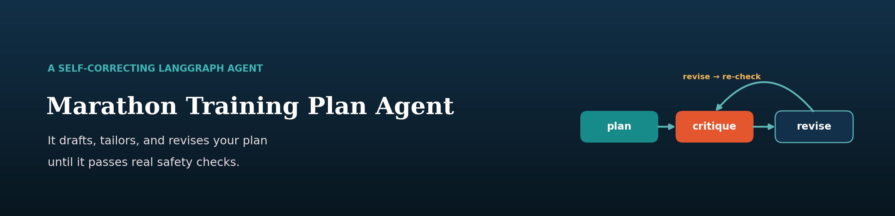
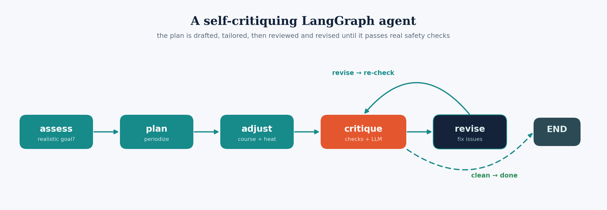

assess
Judges whether the goal time is realistic given current fitness, then sets a target and a peak mileage.
Ask an LLM for a training plan and it will happily ramp you into an injury.
A LangGraph agent that assesses whether your goal time is realistic, drafts a periodized week-by-week build, tailors it to your actual race using course and weather findings, and then critiques and revises its own work until it passes a set of deterministic safety checks. The plan you get has survived review rather than just generation.

assess → plan → adjust → critique → revise, with a real loop back from revise into critique.
what it recommended when asked for 3:05 off 22 miles a week. It argues the case rather than just complying.
caught by its own critique node on the first draft of that plan, then fixed and re-checked clean.
prints a full agent trace, so you can see which node did what and how many issues each pass caught.
Start · why an agent
Ask a language model for a sixteen-week marathon plan and you get something that looks right. It may also ramp mileage 30% in a week, forget the taper, or prescribe a 26-mile long run — all errors that are obvious to a coach and invisible inside fluent prose.
Wrapping the model in a graph changes what is possible. The
critique node runs deterministic checks in
plain code — ramp rate, taper presence, long-run caps — alongside an LLM
review, and the revise node fixes what it flags and loops back
for another pass, up to a revision budget.
Judges whether the goal time is realistic given current fitness, then sets a target and a peak mileage.
Drafts the periodized build: Base → Build → Peak → Taper.
Tailors to the specific race using my own course-difficulty and heat-tax findings.
Deterministic safety checks plus an LLM review. The deterministic half is what makes it more than a second opinion.
Fixes flagged issues and loops back into critique until clean or the budget runs out.
Every run prints what each node did, so the self-correction is visible rather than claimed.

↓ a real run
This is a recorded run, verbatim, from
examples/sample_run.md: a Boston goal of 3:05 in sixteen weeks
off 22 miles a week and a nine-mile longest run, on a 74°F race day.
$ python -m src.cli --race boston --goal 3:05:00 --weeks 16 \
--current-mpw 22 --longest 9 --days 5 --temp 74
================================================================
ASSESSMENT
================================================================
Goal looks ambitious ⚠. Target: 3:20:00 (peak ~45 mpw)
A 3:05 marathon (~7:03/mi) typically requires a 40-55 mi/week base with
long runs already near 16-18 miles; starting from 22 mi/week and a 9-mile
longest run leaves too little runway in 16 weeks to safely build both the
mileage and the speed. Targeting 3:20 is an aggressive-but-achievable
stretch that lets you peak around 45 mi/week without high injury risk.
It does not simply refuse, and it does not simply comply. It names the mileage base a 3:05 normally requires, points at the two things that have to grow at once, and proposes a target that still stretches.
↓ the self-correction
The trace from that same run. The critique node found five problems in the first draft — including a week-5 mileage jump above 20% — and the revise pass fixed them, after which a second critique came back clean.
================================================================ AGENT TRACE ================================================================ • assess → feasible=False, target 3:20:00, peak 45 mpw • plan → drafted 16 weeks • adjust → tailored plan to course & weather • critique → 5 issue(s): week 5 jumps mileage >20% (23→28) • revise #1 → addressed 5 issue(s) • critique → clean ✔ final plan passed all safety checks
The resulting plan is Boston-specific in ways a generic template is not: it programs downhill quad conditioning from week 3 for the course's punishing early descent, Newton-style hill repeats in the build, a week-12 race simulation with the hills at 15–19 miles, and heat acclimation throughout for the 74°F forecast.
Wk 12 · Peak · 53 mi · long 19 — "19 mi race sim: downhill start, Newton hills at ~15-19 mi"
One row of the generated plan, verbatim↓ watching it work
streamlit run app.py wraps the agent so you can set your race in
the sidebar and watch it move through
assess → plan → adjust → critique → revise live, then read the
plan table, a weekly mileage chart, the safety verdict and the full trace.
The adjust node draws on the same findings as the rest of this
portfolio — course difficulty
and the heat tax —
so a hot Boston plan genuinely does look different from a cool Berlin one.
↓ the gap, reported not hidden
src/eval.py exists and is designed to answer the obvious
question: does the critique/revise loop actually make plans safer? It runs
the agent across a panel of synthetic runners and compares each plan's safety
before the loop against after it, reporting the pass-rate lift and the drop
in mean issues per plan.
Those numbers have not been captured yet. The code is verified and runnable; the run was not completed because of CLI throttling during the build. So this page can show you a real trace catching five real issues, and it cannot yet tell you the average lift across many plans. That is the difference between a demonstration and a measurement, and this is currently the former.
Finish · what it is built on
src/graph.py: ramp rate, taper, long-run capssrc/knowledge.py — course-difficulty and heat-tax figures from my own analysesCLAUDE_MODEL trades quality for speed across the agent's several callssrc/util.py extracts JSON from LLM output that is not always clean JSON